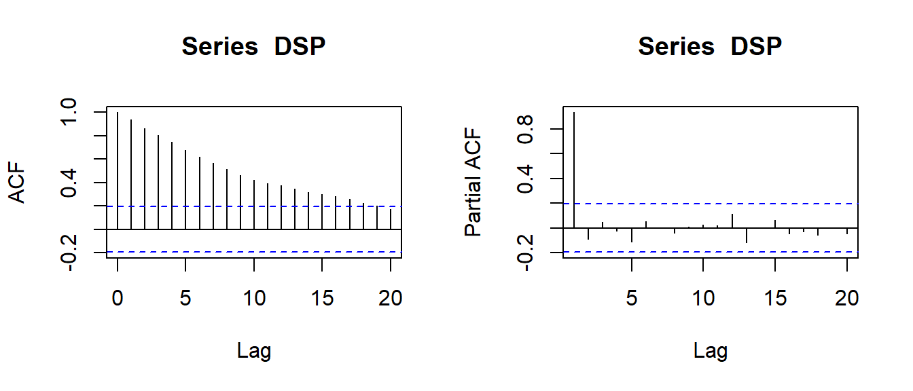

dat <- read.csv("timeseries.csv")
TSP <- ts(dat$TSP)
DSP <- ts(dat$DSP)12-An introductory time series example
1 Introduction
The main scientific question of the following examples is the existence of a trend. However, most trend tests assume stationarity of the residuals, so the concept of stationarity is first introduced by means of two artificial data sets. Here we introduce the following concepts:
- trend stationarity and difference stationarity
- autocorrelation and partial autocorrelation
- test for stationarity
- test for a monotonic trend
The general procedure should then be applied to two real data sets as an exercise. Please keep in mind that the main objective here is trend analysis. The concepts of stationarity and autocorrelation and the related tests are only used as pre-tests to check if simple trend tests are possible. Please note also the importance of the effect size, e.g. the temperature increase pear year.
The book of Kleiber & Zeileis (2008) contains an excellent explanation of the methods described here and is strongly recommended for further reading.
2 Demonstration of methods (artificial data set)
2.1 Data set
The data set “timeseries.txt” contains artificial data with specifically designed properties, similar to the TSP and DSP series in the tutorial https://tpetzoldt.github.io/elements/.
The data sets are available from https://tpetzoldt.github.io/datasets/. You can either download it locally or modify the code that the data are directly read from the web. Then convert it to time series objects (ts), to make their analysis easier.
It is always a good idea to plot the data first.
par(mfrow=c(1,2))
plot(TSP)
plot(DSP)2.2 Autocorrelation and partial autocorrelation
First, plot the autocorrelation (acf) and partial autocorrelation (pacf) of the DSP series:
par(mfrow=c(1,2))
acf(DSP)
pacf(DSP)
… and interpret the results.
Then plot the acf for both series, together with the autocorrelation of the differenced and residual time series:
par(mfrow=c(2,3))
acf(TSP)
acf(diff(TSP))
acf(residuals(lm(TSP~time(TSP))))
acf(DSP)
acf(diff(DSP))
acf(residuals(lm(DSP~time(DSP))))Here, diff is used for differencing the time series i.e. to compute differences between consecutive values, while lm fits a linear regression from which residuals extracts the residuals.
The autocorrelation function acf can be used to identify specific patterns. A series is considered as approximately stationary, if all autocorrelations (except for \(lag=0\)) are “almost non-significant”.
Hint: Deconstruct the parenthetisized statements like acf(residuals(lm(TSP~time(TSP)))) into 3 separate lines to understand better what they do. Plot the data and the trend.
2.3 Stationarity test
The Kwiatkowski-Phillips-Schmidt-Shin test checks directly for stationarity, where \(H_0\) may be either level stationarity or trend stationarity. Don’t get confused:
- level stationary is just the same as stationary, the additional “level” just makes it clearer.
- in contrast, trend stationary is essentially non-stationary, but can easily be made stationary by subtracting a trend, because the residuals are stationary.
- the warning message of the KPSS test is normal and not an “error”, its just an information that the true p-value is either smaller or greater than the printed value.
library("tseries")
kpss.test(TSP, null="Level") # instationary
kpss.test(TSP, null="Trend") # stationary after trend removal
kpss.test(DSP, null="Level") # instationary
kpss.test(DSP, null="Trend") # still instationary
kpss.test(diff(DSP), null="Level")2.4 Mann-Kendall test for trends
This is now finally the main test.
library("Kendall")
MannKendall(TSP) # correct only for trend stationary time series
MannKendall(DSP) # wrong, because time series was difference stationary3 Real data set: air and water temperature
Now, let’s try to find out if we can find linear trends in real data sets.
Scientific Hypothesis: The air temperature in Dresden and the water temperature of Saidenbach Reservoir increased during the last decades.
Data sets:
mean April air temperature from the meteorological station Klotsche near Dresden (source: German Weather Service, DWD http://www.dwd.de) and
water temperature in May in 3m depth of the Saidenbach drinking water reservoir, source: Ecological station 19hain, unpublished data. Many thanks to Dr. René Sachse and Dr. Lothar Paul for giving permission.
The data are available from https://tpetzoldt.github.io/datasets/ and then converted to a time series object. Please note the start argument that sets the start year of that object:
dat1 <- read.csv("airtemp_april.csv")
dat2 <- read.csv("watertemp_may.csv")
Tair <- ts(dat1$T, start=1967)
Twat <- ts(dat2$May, start=1975)3.1 Trend of air temperature
The plot seems to show an increasing trend, especially since 1980.
plot(Tair)Test of stationarity
Test for stationarity for the original and the trend adjusted series graphically with acf and quantitatively with the KPSS test:
kpss.test(Tair)We see that \(p < 0.01\) so it is not “level stationary”!
But if we allow for a trend:
kpss.test(Tair, null="Trend")… we get \(p > 0.05\) i.e. it is trend stationary (stationary after trend removal). Therefore, a trend test is possible.
Trend test
We use the Mann-Kendall test dirst, that tests for monotonous trends:
MannKendall(Tair)Now we fit a linear model to find out how much the temperature increased per day during this time.
m <- lm(Tair ~ time(Tair))
summary(m)
plot(Tair)
abline(m, col="red")Now test the assumptions. Firstly test that the residuals have no autocorrelation:
acf(residuals(m))Optional Task: use additional diagnostics, e.g. plot residuals versus fitted or qqnorm(residuals(m)) to test for normal distribution. Write the results down and evaluate what they can tell us.
Questions:
- Is the trend significant?
- which of the used tests is the best to test for a trend?
- what does “monotonous” mean?
- What is the advantage of fitting a linear model?
- What is the purpose of checking autocorrelation of the residuals with
acf?
3.2 Stationarity and trend of water temperature
Now repeat the same for the water temperature data, interpret the results and write a short report. Read about limnology of stratified lakes in temperate climate zones and discuss reasons why the trend of water temperature is weaker or stronger than air temperature.
Scientific Questions
- Was there a significant trend in water and air temperature?
- How much Kelvin (degrees centigrade) did the water temperature increase on average during this time?
- Was the trend of water weaker or stronger than for air temperature? Which lake-physical processes are responsible for this effect?
4 Homework project 2025
Find a publicly available data set about surface water or air temperature and analyse its trend (“own data set”). Compare your results with the data set from Dresden and / or Saidenbach reservoir (given data sets) or a second own data set:
- Visualize the data sets.
- Do proper aggregation (e.g. monthly or annual mean) using tidyverse functions.
- Analyse it for trend and measure the effect size.
- Compare the trend graphically and numerically with the trend of the air temperature in Dresden-Klotzsche or the water temperature of Saidenbach reservoir.
- Find at least two publications to discuss your results in context.
The “own data set” can be a data set from your home country, from a prominent location in the world, or another lake or measurement station in Germany. It should cover at least 20 years of regular mesurements, ideally with a daily or monthly resolution. The comparison between the “own data set” and one of the “given data sets” should make sense, e.g. air temperature from different stations in the same month or air and water temperature from stations nearby.
Communication: We expect a unique solution from every group, but teamwork and communication are allowed. Use the chat group to ask technical issues (e.g. where to get data sets or how to do data aggregation) and to share interpretation of the results.
Formatting and style: The page limit is 3-5 pages (plus references and an optional title page), font size should be 11 or 12 points, line spacing 1.1-1.3 lines, reasonable page margins (at least 2cm). The outline should stricly follow an IMRaD (Introduction, Methods Results and Discussion) structure. Figures and tables should be numbered and have a caption. Short code can be part of the text, longer code segments and purely technical tables should be avoided. The report can be written with any text processing software (e.g. Quarto or Word).
Submission date: 2025-01-19 to allow feedback before the examination period.
5 References
Kleiber, C., & Zeileis, A. (2008). Applied Econometrics with R. Springer Verlag. https://link.springer.com/book/10.1007%2F978-0-387-77318-6